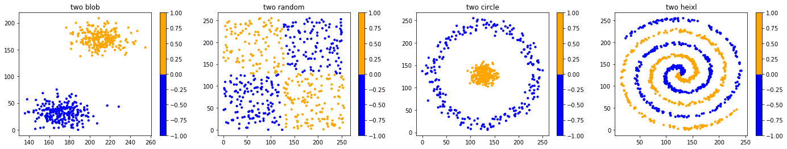
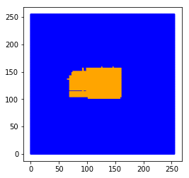
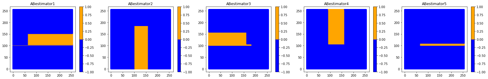

In [1]:
# -*- coding:UTF-8 -*- ＃
# 导入模块
import sys
import time
import random
import numpy as np
import matplotlib.pyplot as plt
import pydotplus
from IPython.display import Image
from sklearn.datasets import load_iris
from sklearn import tree
from matplotlib.colors import ListedColormap
from sklearn.ensemble import (RandomForestClassifier, ExtraTreesClassifier,AdaBoostClassifier)
from sklearn.tree import DecisionTreeClassifier
from sklearn.ensemble import GradientBoostingClassifier
from sklearn.preprocessing import StandardScaler
from sklearn.neural_network import MLPClassifier
from sklearn.neighbors import KNeighborsClassifier
from sklearn.svm import SVC
from sklearn.gaussian_process import GaussianProcessClassifier
from sklearn.gaussian_process.kernels import RBF
from sklearn.discriminant_analysis import QuadraticDiscriminantAnalysis
sys.path.append(r"C:\Users\zhang\Desktop\exeserise")
import mymodule as MYD
In [2]:
n_samples=500
XB,yb=MYD.makeblods(n_samples)
XR,yr=MYD.makerandoms(n_samples)
XC,yc=MYD.makecircles(n_samples)
XH,yh=MYD.makeHelixs(n_samples)
XAS = [XB, XR, XC,XH]
YAS=[yb,yr,yc,yh]
cor = ListedColormap(['Blue', 'Orange'])
titlename=['two blob','two random','two circle','two heixl']
cmap=[cor,cor,cor,cor]
MYD.DrawManyChart(XAS,YAS,cmap,24,4,titlename,10,1,4)

In [3]:
Xzip,points=MYD.makeGrids()
plt.figure()
plt.scatter(points[:,0],points[:,1],s=0.009)
plt.show(); points[:,0].shape;

17. 随机森林、ExtraTrees、Adaboost、GradientBoost分类效果¶
In [4]:
LabelDTR=[]; LabelRAN=[]; LabelEXT=[]; LabelADA=[]; LabelGRA=[];
lable=[LabelDTR,LabelRAN,LabelEXT,LabelADA,LabelGRA];
ScoreDTR=[]; ScoreRAN=[]; ScoreEXT=[]; ScoreADA=[]; ScoreGRA=[];
score=[ScoreDTR,ScoreRAN,ScoreEXT,ScoreADA,ScoreGRA];
L=len(points); a=1
number_of_points = int(a*L)
p = points[0:number_of_points]
dt_stump = DecisionTreeClassifier(max_depth=1, min_samples_leaf=1)
modelDTR=DecisionTreeClassifier(criterion='gini',max_depth=5)
modelRandomForest=RandomForestClassifier(n_estimators=7, criterion='gini', max_depth=None)
modelExtraTree=ExtraTreesClassifier()
modelAdaBoost=AdaBoostClassifier(base_estimator=DecisionTreeClassifier(criterion='gini',max_depth=3), n_estimators=5,learning_rate=1.0,algorithm='SAMME')
modelGradient=GradientBoostingClassifier(n_estimators=5,learning_rate=1.0,max_depth=4, random_state=0)
allmodule=[modelDTR,modelRandomForest,modelExtraTree,modelAdaBoost,modelGradient]
DI=2
for i in range(0,len(allmodule)):
tempmodule=None
tempmodule=allmodule[i].fit(XAS[DI],YAS[DI])
lable[i].append(tempmodule.predict(p))
score[i].append(tempmodule.score(XAS[DI],YAS[DI]))
print(score);
cor = ListedColormap(['Blue', 'Orange'])
titlename=['DecisionTreeClassifier','RandomForestClassifier','ExtraTreesClassifier','AdaBoostClassifier','GradientBoostingClassifier']
PC=[p,p,p,p,p]
cmap=[cor,cor,cor,cor,cor]
MYD.DrawManyChart(PC,lable,cmap,25,4,titlename,10,1,5)
[[1.0], [1.0], [1.0], [1.0], [1.0]]

18. RandomForest并行分类过程¶
In [5]:
Nestimators=modelRandomForest.estimators_
Nclasses=modelRandomForest.n_classes_
oobdecisionfunction=modelRandomForest.oob_score
indicator,n_nodes_ptr=modelRandomForest.decision_path(XAS[DI])
labelEST1=[]; labelEST2=[]; labelEST3=[]; labelEST4=[]; labelEST5=[]; labelEST6=[]; labelEST7=[];
alllabelEST=[labelEST1,labelEST2,labelEST3,labelEST4,labelEST5,labelEST6,labelEST7];
for k in range(0,len(Nestimators)):
Estimator=Nestimators[k]
alllabelEST[k].append(Estimator.predict(p))
cor = ListedColormap(['Blue', 'Orange'])
titlename=['RTestimator1','RTestimator2','RTestimator3','RTestimator4','RTestimator5','RTestimator6','RTestimator7'];
PCE=[p,p,p,p,p,p,p]
cmap=[cor,cor,cor,cor,cor,cor,cor]
MYD.DrawManyChart(PCE,alllabelEST,cmap,28,3.2,titlename,10,1,7)

In [6]:
sumlabel=labelEST1;
for n in range(1,len(alllabelEST)):
for m in range(0,len(labelEST1)):
sumlabel[m]=sumlabel[m]+alllabelEST[n][m]
finallabel=[];
for j in range(0,len(sumlabel[0])):
if(sumlabel[0][j]>=4):
finallabel.append(1)
else:
finallabel.append(0)
plt.figure(figsize=(4,4))
plt.scatter(p[:,0],p[:,1],c=finallabel,s=0.9,cmap=cor)
plt.show();

19. AdaBoost串行分类过程¶
In [7]:
ABestimator=modelAdaBoost.estimators_
ABweight=modelAdaBoost.estimator_weights_
ABerror=modelAdaBoost.estimator_errors_
labelAB1=[]; labelAB2=[]; labelAB3=[]; labelAB4=[]; labelAB5=[];
alllabelAB=[labelAB1,labelAB2,labelAB3,labelAB4,labelAB5];
for WI in range(0,len(ABestimator)):
estimator=ABestimator[WI]
mylabel=estimator.predict(p)
templableTram=MYD.classtransform(mylabel)
alllabelAB[WI].append(templableTram)
cor = ListedColormap(['Blue', 'Orange'])
titlename=['ABestimator1','ABestimator2','ABestimator3','ABestimator4','ABestimator5'];
PCEAB=[p,p,p,p,p]
cmap=[cor,cor,cor,cor,cor]
MYD.DrawManyChart(PCEAB,alllabelAB,cmap,28,4,titlename,10,1,5)

In [8]:
sumlabelAB=MYD.Multiplyonedata(alllabelAB[0],ABweight[0]);
for WI in range(1,len(alllabelAB)):
sumlabelAB=MYD.addarray(sumlabelAB,MYD.Multiplyonedata(alllabelAB[WI],ABweight[WI]))
finallabelAB=[];
for j in range(0,len(sumlabelAB[0])):
if(sumlabelAB[0][j]>0):
finallabelAB.append(1)
else:
finallabelAB.append(-1)
plt.figure(figsize=(5,5))
plt.scatter(p[:,0],p[:,1],c=finallabelAB,s=0.9,cmap=cor)
plt.show();